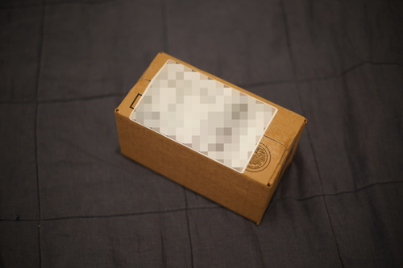
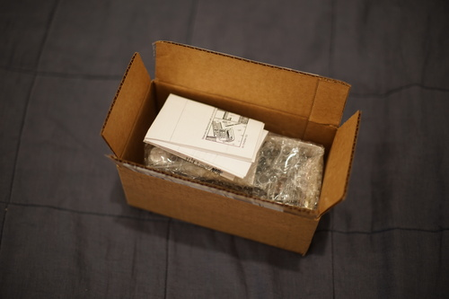
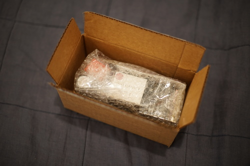
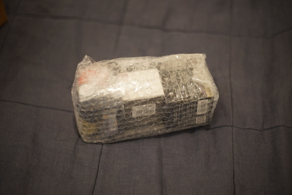
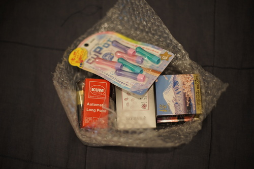
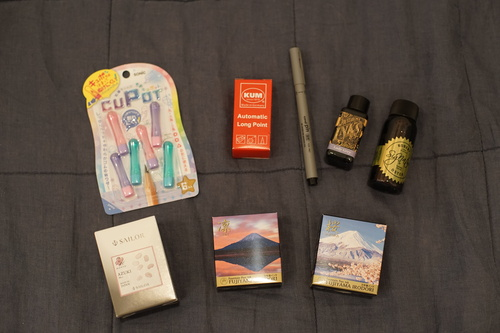
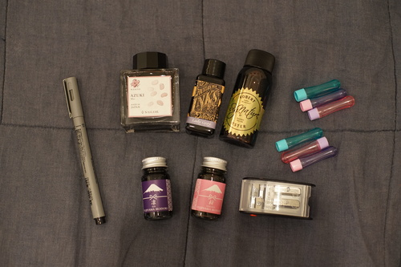

I was gifted a gift card to JetPens back in December and I was waiting very patiently for something awesome to show up!! I ended up filling up a wishlist with things not quite worth making a full order for.
Nothing amazing popped up in those months so I made an order anyway!




The long awaited reveal!!!



Here's the load out:
The only pen I've found that reliably writes on washi tape! I'm worried my two will die on me.
Sailor Azuki is almost purple. It's a little similar to Wearingeul Jane Eyre. I'm not sure if it belongs in my pink collection!
I chose Oster Australis Rose because it was supposedly similar to Kobe Ink Strawberry Chocolate. I can't say if it's similar or not, but it's a lovely pink that has no shading.
Teranishi's Sakura is a pink with surprising blue undertones. Teranishi's Rin is a dark purple with blue undertones. These will be fun to paint with!
Diamine's Reddit collab Lady Grey is a little purple and a little blue. With a lot of water, I'd almost say it's pink!
I'm now drowning in inks. Send help. HELP